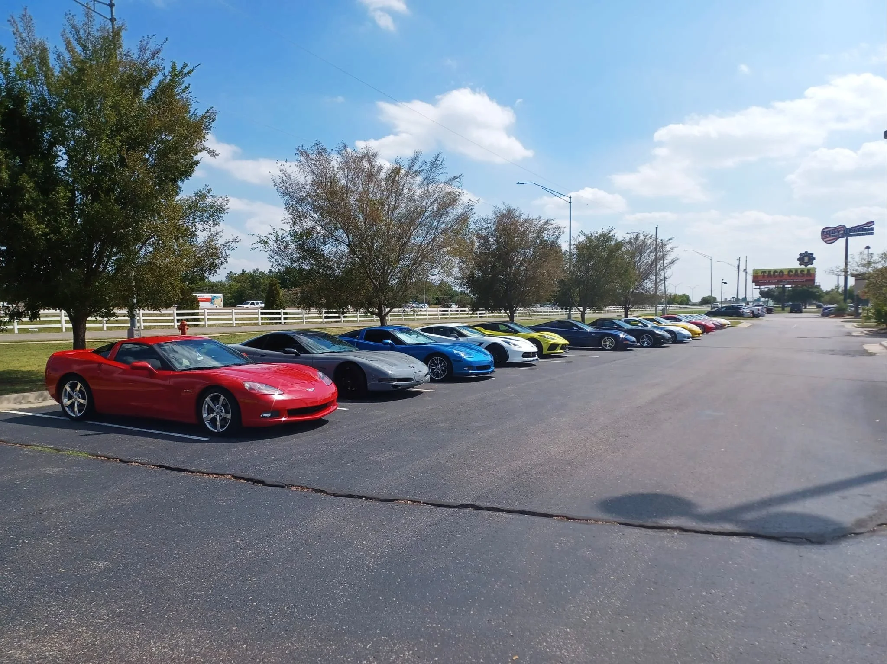
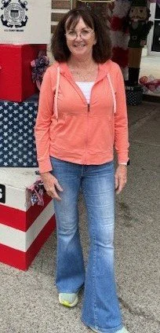
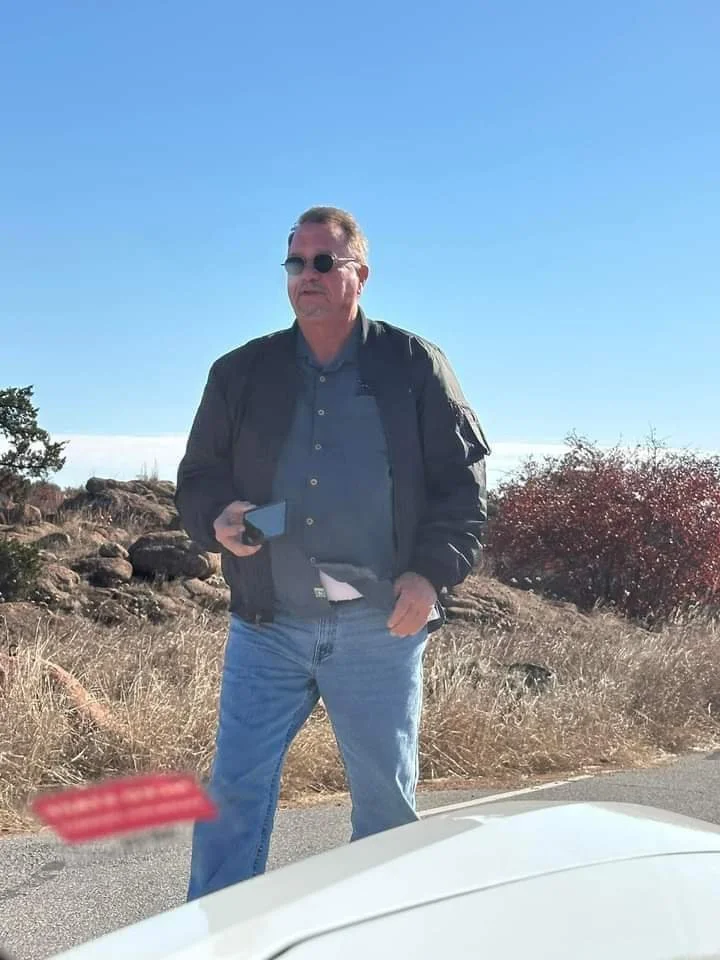
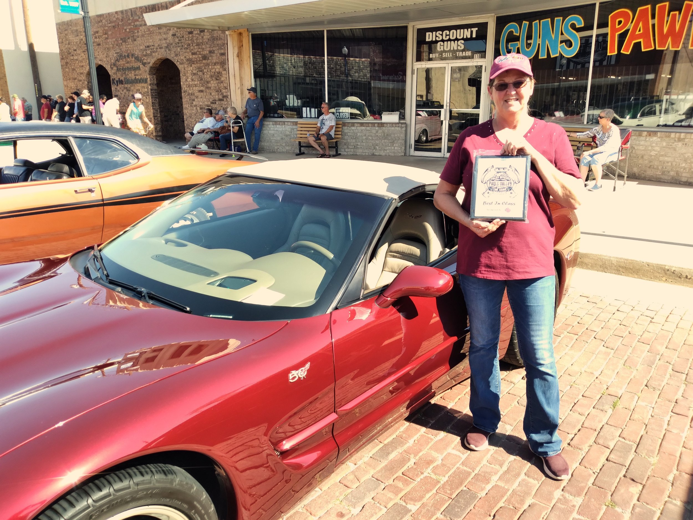
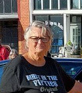

About the club
About & Officers
Our purpose
The purpose of the Heart of Oklahoma Corvette Club (HOCC) is to encourage participation of the club members in events and social activities that promote HOCC and its membership. The members of HOCC are willing to support those in need, assist with charitable events and support our local schools and other community activities.

Leadership
Meet The HOCC Officers
Dianne DunbarPresident

Dianne is retired. She is a Veteran of the US Air Force. She has worn many different hats during her career; she is most proud of her work as a private caregiver for the last 15 years. She is thrilled to have found her Corvette family with the Heart of Oklahoma Corvette Club and learning more about her car.
David FinleyVice President & Founder

David currently works for the USDA - NRCS. David’s service is as a Quality Assurance Inspector for the rehabilitation of flood control dams. David’s hobbies include woodworking and diy projects. David enjoys being a part of the Corvette community and hanging out with his Corvette family of friends.
Myra FinleyTreasurer & Founder

Myra has been married to David for 30+ years and is retired. Myra has over 40 years in the accounting industry. Myra enjoys crafts and diy projects. Myra loves her Corvette and Corvette family.
Carolyn ThompsonMember At Large

Carolyn retired from a non-profit after 17 years as a contractor at Tinker Air Force Base. Loves all corvettes but has a special place in her heart for C3’s. Enjoys flowers, woodworking and grandkids.
Good to know
Frequently Asked Questions
Where does the club meet?
Sonny’s Café, 2406 Weeden Blvd, Purcell, OK 73080, (405) 527-0640; and Yellow Rose Dinner Theater, 1005 SW 4th St, Moore, OK 73160. See the events page for dates.
Do I need to be a member to attend events?
In club sponsored events membership is required. Join or renew here.
Is HOCC a non-profit?
Yes. HOCC is incorporated in the State of Oklahoma as a Not For Profit Corporation. HOCC was incorporated on June 12th, 2023.
Is HOCC a 501(c)(3)?
Yes. HOCC EIN: 93-1833147